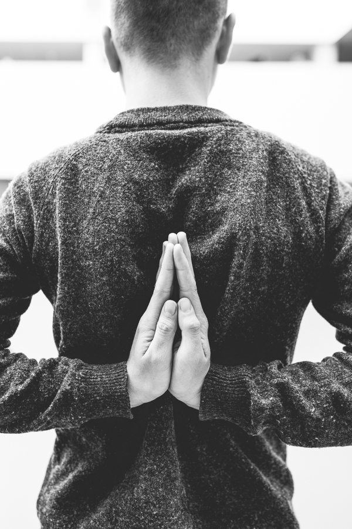
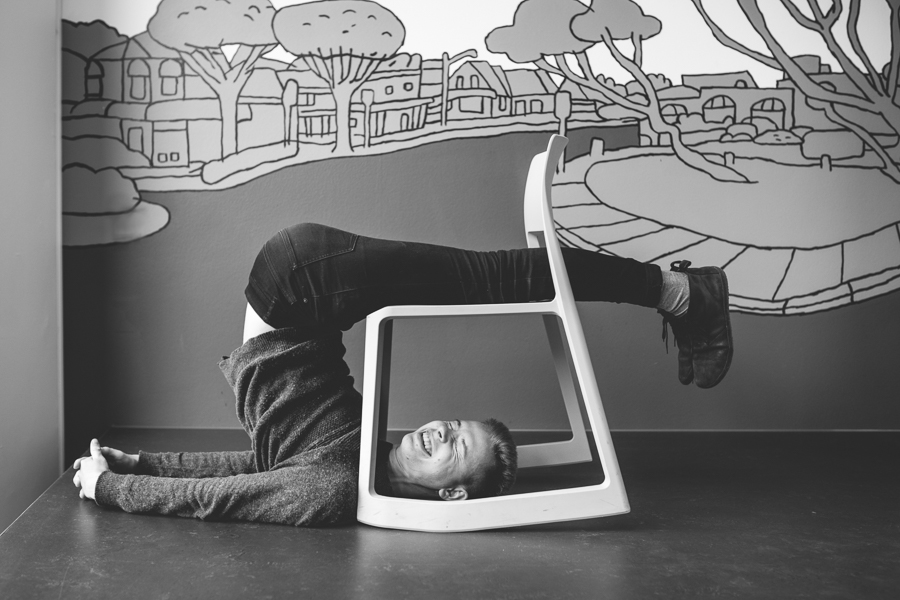

Robert grew up in a multi-generational household in Czech Republic. He tells us about how deeply rooted yoga is in his family history, finding his own path to yoga, and shares some of the challenges he faces studying full time and making time for his practice.

Robert Wolf:
Living, Breathing, and Teaching Yoga

Golden Hours: How were you introduced to yoga?
Robert Wolf: So I grew up in a family house with three floors. My family lived on the middle floor, and downstairs there was my great aunt, and upstairs there was my great uncle. I would always be in this space, connected to my relatives.
My great aunt and uncle have been practitioners of yoga since the 70s. They were actually one of the first ones to bring yoga into the country, which at the time was still Czechoslovakia. We were kind of isolated, and they were some of the few people who had the chance to travel outside the country to Austria. They found a guru there, and they invited him back.
They had some troubles bringing yoga [to Czechoslovakia] because it was a little bit more spiritual than it is nowadays, so the political censorship was a little bit against it. But they managed it, and they started this big movement.
They were some of the first few people practicing yoga in my country, and I was ignorant to this. I was six years old and I was playing with these little statues of buddhas and stuff at the house. My great aunt gave me some books with Indian fairy tales and stories and nothing was connected in my mind with yoga. I knew subconsciously that they were practicing, but I never had any special interest in it.
I didn’t pay any special interest because my own parents didn’t really practice yoga. I actually found my own way to yoga.
I started practicing yoga in my spare time while on exchange in the United States. I would watch yoga videos online. It went along like this for a year or so, I never went to a yoga studio or yoga class. I felt a little bit intimidated by it actually. And then I came back home and my mom started to practice yoga, so I started to go as well. That was in autumn last year. There, I actually was asked if I would like to become a teacher as well so I did this yoga teacher training. Since June this year, I started to teach. So it’s a really limited period, and it went by really fast. I’m still new to this.
GH: Have you since practiced with your great aunts or uncles?
RW: (laughs) No. We’re still kind of going in different ways. I think the way they practice is more spiritual. The way they were introduced to yoga was more spiritual than it is nowadays. Both of my great uncles are teaching. One of them lives in Switzerland. The other is living near my house but I never actually attended a class. I was thinking about it a couple of times. I always did, but not yet. I really want to.
GH: Tell us about your yoga practice.
RW: I usually practice in the morning. Sometimes finding the time can be challenging since I’m a student. I’m still trying to dedicate at least 10 minutes every morning to practice. Now that I’ve started teaching again, it’s helping me to explain and show an example. And that’s kind of a practice in itself. So it helps me to be more consistent in the practice when I have regular classes during the week.
GH: You recently started teaching yoga in Aarhus. What inspired you to do the teacher training and become a yoga teacher??
RW: It wasn’t actually my idea. I was practicing yoga with a friend of mine, who is a yoga teacher, and she was like, whoa! You should try teaching. I think you would be a good teacher. So I just had that in my mind. That was about a year ago. A couple of months ago, I started attending this yoga studio, and the owner asked me if I would like to attend this teacher training course they were preparing. That she would really like to have me as one of their teachers, and that if I completed this course, she could employ me. So I was like- wow, this is the second time someone has told me I should do it. So I just did it.
GH: It sounds like you’ve had people who have helped guide you.
RW: Yeah. And I think that’s very important. I think that without it, I wouldn’t stay with yoga. There wouldn’t be people to keep motivating me.
GH: Do you practice a particular style of yoga?
RW: Right now I’m doing Ashtanga yoga. It’s a very different practice than what we're used to in the West. You always practice the same sequence, which can take up to an hour and a half. So it’s a little bit time challenging, which is why I’m having a little bit of trouble practicing everyday.
It’s more advanced, and you need to be really focused on all the different aspects regarding your consciousness and your breathing.
I’m teaching mostly Vinyasa yoga, which focuses on strengthening your body. It’s not so challenging in flexibility, and it uses more dynamic elements, more flowing sequences.
It’s funny, because Vinyasa yoga is like Ashtanga yoga taken out of the system so it can be more accessible.
In the end there is only one yoga. That’s what all the people who have inspired me always say: “There is only one yoga.” And these styles- they’re only styles.

In the end there is only one yoga. That’s what all the people who have inspired me always say.
- and these styles- they’re only styles.
GH: You mentioned that you’re finding time to practice in the morning, so I imagine that with a full time course load it’s hard to find time to practice. What are your strategies for balancing your studies with your practice?
RW: This is part of the Ashtanga yoga philosophy, to practice in the morning, so you can go out and make the world better. I really like this. I think creating a habit like this makes it easier, as it’s first thing you do when you wake up. You always have time for it, and this way you never skip it.
GH: And so doing it in the morning, and including your yoga before you start your day, do you find yoga has affected your creative process?
RW: Of course, yeah. Generally I feel more balanced and physically comfortable.
GH: What inspires you to continue practicing everyday?
RW: At first it was this vision. I believed that yoga has a lot of benefits, which I’d heard from people who inspired me. This helped to motivate me. And after practicing for a while, I started to see these real effects. It works. It’s the whole philosophy. It affects my thinking.

GH: There may be a misconception about the amount of dedication you need to practice yoga. What would you say to students who are interested by yoga but are maybe intimidated by the commitment?
RW: Well, it is a commitment. I felt like I don’t have enough self-discipline to do it at first. But sometimes yoga is translated to mean control, and I think it’s a way of gaining control over yourself. It’s not a reason not to start, right? It’s like with flexibility. You do yoga because you are not flexible. To gain the flexibility. It’s not like an excuse not to start. So you do yoga to gain the self-discipline and control. It will come with it.
GH: What do you love most about practicing yoga?
RW: It brings me to myself. It creates the relationship with myself. We’re by default in this society in our minds, you know? We don’t actually recognize what it “us”: what is our mind, what is our body. And by doing yoga, I understand that this is my body, but it’s not me. That this is my mind, but it’s not me. I’m related to this, I have a relationship with this, but I have to be aware and cultivate my mind and body. It helps me look inside and then calm this down. I become more at peace with myself.
GH: They say yoga can be very good for students because it teaches you how to sit, and enhances your concentration. Do you agree?
RW: When I was studying for my graduation exams, which was a week of studying in a row, I was helping myself with yoga a lot. In the middle of reading a very heavy subject for two hours, I would stop for a while and stand on my head for two or three minutes. And it’s actually very efficient. It starts to turn away the blood stream so your head gets full of blood. It’s also very good for concentration and all these mental aspects.
GH: Would you have any advice for students as to whether they should start, or any kind of things they can do in their everyday to warm up towards practicing yoga? In their own homes, for example?
RW: You can implement yoga in everyday life. You don’t need to be in class to do yoga. For example, when you’re drying your hair, you can dry your hair upside down. And you’re actually doing a big stretch. One of my teachers was saying you can stretch while you’re on the phone. And when you sit, you can work on opening your hips by crossing your legs. It’s not limited to the class. You can insert it into your lifestyle.